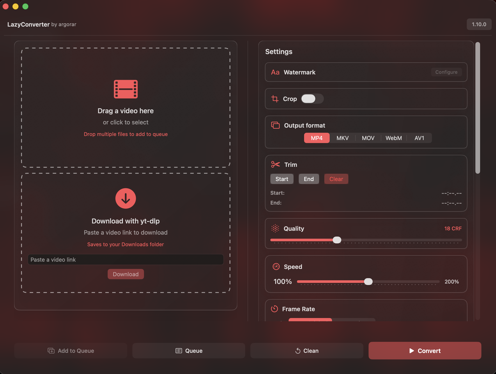

Flexible conversion
Export to MP4, MKV, MOV, WebM, and AV1. Adjust resolution (original, 4K, 1080p, 720p) and CRF quality.
Fast format conversion, trimming, visual cropping and more powered by FFmpeg. Lightweight, versatile, and instant.

Capabilities
A compact set of tools for conversion, trimming, and light editing.
Export to MP4, MKV, MOV, WebM, and AV1. Adjust resolution (original, 4K, 1080p, 720p) and CRF quality.
Boost frame rates up to 60fps or 120fps with GPU-accelerated RIFE neural network interpolation.
Eliminate camera shake with libvidstab (low, medium, high) and clean sensor noise with hqdn3d.
Paste video links via yt-dlp, preview selected segments, and download only the clip you need.
Drop multiple videos into the queue drawer to batch process them in the background with live progress.
Combine and concatenate multiple video clips into a single continuous file with custom ordering.
On-screen handles with aspect ratio locks, plus an automated pixel tracker that follows subjects over time.
Cut multiple segments in one pass and adjust playback speed between 0.5x and 2x with live preview.
Draw custom velocity curves over time using interactive speed map keyframes.
Create smooth pan and zoom effects for a cinematic feel directly on your video timeline.
Set maximum output size in MB for Discord or email, with optional GPU super-compression.
Position custom text watermarks and fine-tune brightness, contrast, saturation, and gamma in real time.
Process
Three steps from raw file to final export.
Drag a video in or click to select your file from Finder.
Adjust format, resolution, quality, speed, trim, or crop options.
Convert with one click and receive a notification when the process finishes.
Setup
To run the standard app you need to have FFmpeg (with --with-libvidstab for stabilization) and optional yt-dlp for web downloads. Alternatively, download the Standalone build with bundled binaries.
Execute the following commands in Terminal with Homebrew:
$brew tap homebrew-ffmpeg/ffmpeg
$brew install homebrew-ffmpeg/ffmpeg/ffmpeg --with-libvidstab
$brew install yt-dlpLazyConverter is built for Mac users who want simple, fast, and flexible video processing.